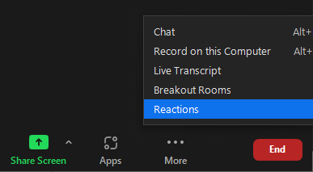

Preparation
Here are the things you need to do to be prepared for this workshop.
Have command line experience
We recommend you go through the Software Carpentry shell-novice tutorial if you are new to the command-line.
Enable UH Multi-factor authentication
You must enable MFA on your UH account to use Mana. You can do that at https://www.hawaii.edu/its/uhlogin/.
Obtain an account on Mana
If you do not already have an account on Mana, please go to the Mana Home Page for instructions.
Install a modern web browser
We recommend Chrome or Firefox. Internet Explorer is not recommended.
Download the workshop Jupyter notebook
Please download participants-copy.ipynb to your local computer (use “save as”, i.e. right click).
How to provide feedback during the workshop
We encourage participants to write comments and questions in chat and use the non-verbal feedback features of zoom.
If at any time you have a question that is easier to talk through than writing it in chat, please indicate in chat you have a question or raise your virtual hand so that we know you wish to speak.

